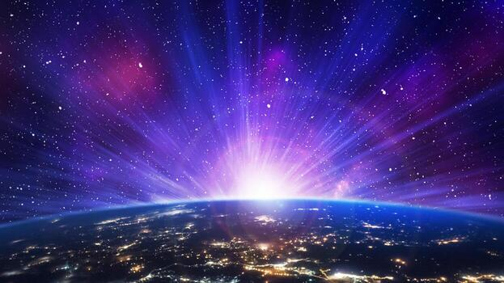
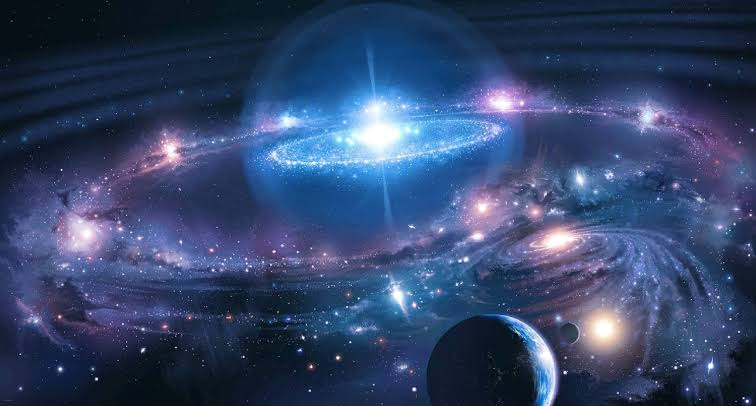

Descubre los misterios del espacio
El universo es la totalidad de todo lo que existe, incluyendo el espacio, el tiempo, la materia y la energía, mientras que el espacio es el contenedor o escenario tridimensional donde se encuentran y se mueven los astros.
El espacio exterior es la vasta extensión del universo que se encuentra más allá de las atmósferas de los cuerpos celestes. Es un vacío casi perfecto, dominado por la gravedad, la radiación y una mezcla de materia visible y oscura.
Composición general: La mayor parte del universo observable está compuesto por energía oscura (~68%) y materia oscura (~27%). La materia ordinaria (átomos de los que están hechas las estrellas, planetas y seres vivos) representa solo cerca del 5%.
Vacío y temperatura: Aunque no es un vacío absoluto (contiene una densidad muy baja de partículas, principalmente hidrógeno y helio), carece de aire para transmitir sonido. La temperatura media del espacio profundo es de aproximadamente -270,45 °C (2,7 Kelvin), mantenida por la radiación de fondo de microondas.
Límite con la Tierra: La frontera aceptada internacionalmente entre la atmósfera terrestre y el espacio exterior es la Línea de Kármán, ubicada a 100 kilómetros de altitud sobre el nivel del mar.
Estrellas y Sistemas: Las estrellas son esferas de plasma en fusión nuclear. El Sol es la estrella central del Sistema Solar, el cual alberga 8 planetas principales, planetas enanos (como Plutón) y millones de asteroides y cometas.
Galaxias: Son enormes sistemas sujetos por la gravedad que agrupan miles de millones de estrellas, gas y polvo. La Tierra se ubica en la Vía Láctea, una galaxia espiral que forma parte del Grupo Local, junto con la galaxia de Andrómeda.
Agujeros Negros: Regiones del espacio con una concentración de masa tan densa que la gravedad impide que incluso la luz escape. Se forman tras el colapso de estrellas masivas o en los núcleos de las galaxias.
Origen y Expansión: Según el modelo del Big Bang, el universo comenzó hace aproximadamente 13,800 millones de años a partir de un estado de altísima densidad y temperatura, y continúa expandiéndose de forma acelerada.
Ondas Gravitacionales: Perturbaciones en el tejido del espacio-tiempo producidas por eventos violentos, como la fusión de dos agujeros negros.

El espacio exterior no tiene un fin o un borde físico conocido, aunque los científicos distinguen entre lo que podemos observar y la totalidad del cosmos.
El universo se originó hace unos 13.800 millones de años con el Big Bang, cuando comenzó a expandirse desde un estado extremadamente caliente y denso. Con el tiempo se formaron átomos, estrellas y galaxias. Hace unos 4.600 millones de años nació el Sol y poco después se formó la Tierra. En nuestro planeta apareció la vida, que evolucionó durante miles de millones de años hasta producir plantas, animales y finalmente los seres humanos. Hace unos 300.000 años apareció el Homo sapiens, que desarrolló sociedades, ciencia y tecnología. Actualmente sabemos que el universo sigue expandiéndose y que su futuro podría ser un universo cada vez más frío y oscuro.
